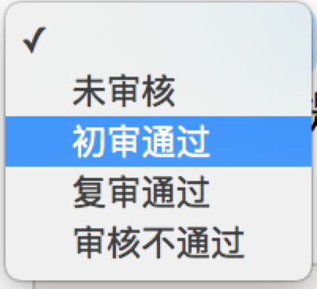

Selenium
Selenium是一个Web的自动化测试工具，最初是为网站自动化测试而开发的，类型像我们玩游戏用的按键精灵，可以按指定的命令自动操作，不同是Selenium 可以直接运行在浏览器上，它支持所有主流的浏览器（包括PhantomJS这些无界面的浏览器）。
Selenium 可以根据我们的指令，让浏览器自动加载页面，获取需要的数据，甚至页面截屏，或者判断网站上某些动作是否发生。
Selenium 自己不带浏览器，不支持浏览器的功能，它需要与第三方浏览器结合在一起才能使用。但是我们有时候需要让它内嵌在代码中运行，所以我们可以用一个叫 PhantomJS 的工具代替真实的浏览器。
可以从 PyPI 网站下载 Selenium库https://pypi.python.org/simple/selenium ，也可以用 第三方管理器 pip用命令安装：
sudo pip install seleniumSelenium 官方参考文档：http://selenium-python.readthedocs.io/index.html
PhantomJS
PhantomJS 是一个基于Webkit的“无界面”(headless)浏览器，它会把网站加载到内存并执行页面上的 JavaScript，因为不会展示图形界面，所以运行起来比完整的浏览器要高效。
如果我们把 Selenium 和 PhantomJS 结合在一起，就可以运行一个非常强大的网络爬虫了，这个爬虫可以处理 JavaScrip、Cookie、headers，以及任何我们真实用户需要做的事情。
PhantomJS 是一个功能完善(虽然无界面)的浏览器而非一个 Python 库，所以它不需要像 Python 的其他库一样安装，但我们可以通过Selenium调用PhantomJS来直接使用。
在Ubuntu16.04中可以使用命令安装：
sudo apt-get install phantomjs如果其他系统无法安装，可以从它的官方网站http://phantomjs.org/download.html) 下载。
PhantomJS 官方参考文档：http://phantomjs.org/documentation
快速入门
Selenium 库里有个叫 WebDriver 的 API。WebDriver 有点儿像可以加载网站的浏览器，但是它也可以像 BeautifulSoup 或者其他 Selector 对象一样用来查找页面元素，与页面上的元素进行交互 (发送文本、点击等)，以及执行其他动作来运行网络爬虫。
# IPython2 测试代码
# 导入 webdriver
from selenium import webdriver
# 调用键盘按键操作时需要引入的Keys包
from selenium.webdriver.common.keys import Keys
# 调用环境变量指定的PhantomJS浏览器创建浏览器对象
driver = webdriver.PhantomJS()
# 如果没有在环境变量指定PhantomJS位置
# driver = webdriver.PhantomJS(executable_path="./phantomjs"))
# get方法会一直等到页面被完全加载，然后才会继续程序，通常测试会在这里选择 time.sleep(2)
driver.get("http://www.baidu.com/")
# 获取页面名为 wrapper的id标签的文本内容
data = driver.find_element_by_id("wrapper").text
# 打印数据内容
print data
# 打印页面标题 "百度一下，你就知道"
print driver.title
# 生成当前页面快照并保存
driver.save_screenshot("baidu.png")
# id="kw"是百度搜索输入框，输入字符串"长城"
driver.find_element_by_id("kw").send_keys(u"长城")
# id="su"是百度搜索按钮，click() 是模拟点击
driver.find_element_by_id("su").click()
# 获取新的页面快照
driver.save_screenshot("长城.png")
# 打印网页渲染后的源代码
print driver.page_source
# 获取当前页面Cookie
print driver.get_cookies()
# ctrl+a 全选输入框内容
driver.find_element_by_id("kw").send_keys(Keys.CONTROL,'a')
# ctrl+x 剪切输入框内容
driver.find_element_by_id("kw").send_keys(Keys.CONTROL,'x')
# 输入框重新输入内容
driver.find_element_by_id("kw").send_keys("itcast")
# 模拟Enter回车键
driver.find_element_by_id("su").send_keys(Keys.RETURN)
# 清除输入框内容
driver.find_element_by_id("kw").clear()
# 生成新的页面快照
driver.save_screenshot("itcast.png")
# 获取当前url
print driver.current_url
# 关闭当前页面，如果只有一个页面，会关闭浏览器
# driver.close()
# 关闭浏览器
driver.quit()
页面操作
Selenium 的 WebDriver提供了各种方法来寻找元素，假设下面有一个表单输入框：
<input type="text" name="user-name" id="passwd-id" />
那么：
# 获取id标签值
element = driver.find_element_by_id("passwd-id")
# 获取name标签值
element = driver.find_element_by_name("user-name")
# 获取标签名值
element = driver.find_elements_by_tag_name("input")
# 也可以通过XPath来匹配
element = driver.find_element_by_xpath("//input[@id='passwd-id']")
定位UI元素 (WebElements)
关于元素的选取，有如下的API 单个元素选取
find_element_by_id
find_elements_by_name
find_elements_by_xpath
find_elements_by_link_text
find_elements_by_partial_link_text
find_elements_by_tag_name
find_elements_by_class_name
find_elements_by_css_selector
By ID
<div id="coolestWidgetEvah">...</div>实现
element = driver.find_element_by_id("coolestWidgetEvah") ------------------------ or ------------------------- from selenium.webdriver.common.by import By element = driver.find_element(by=By.ID, value="coolestWidgetEvah")
By Class Name
<div class="cheese"><span>Cheddar</span></div><div class="cheese"><span>Gouda</span></div>实现
cheeses = driver.find_elements_by_class_name("cheese") ------------------------ or ------------------------- from selenium.webdriver.common.by import By cheeses = driver.find_elements(By.CLASS_NAME, "cheese")
By Tag Name
<iframe src="..."></iframe>实现
frame = driver.find_element_by_tag_name("iframe") ------------------------ or ------------------------- from selenium.webdriver.common.by import By frame = driver.find_element(By.TAG_NAME, "iframe")
By Name
<input name="cheese" type="text"/>实现
cheese = driver.find_element_by_name("cheese") ------------------------ or ------------------------- from selenium.webdriver.common.by import By cheese = driver.find_element(By.NAME, "cheese")
By Link Text
<a href="http://www.google.com/search?q=cheese">cheese</a>实现
cheese = driver.find_element_by_link_text("cheese") ------------------------ or ------------------------- from selenium.webdriver.common.by import By cheese = driver.find_element(By.LINK_TEXT, "cheese")
By Partial Link Text
<a href="http://www.google.com/search?q=cheese">search for cheese</a>>实现
cheese = driver.find_element_by_partial_link_text("cheese") ------------------------ or ------------------------- from selenium.webdriver.common.by import By cheese = driver.find_element(By.PARTIAL_LINK_TEXT, "cheese")
By CSS
<div id="food"><span class="dairy">milk</span><span class="dairy aged">cheese</span></div>实现
cheese = driver.find_element_by_css_selector("#food span.dairy.aged") ------------------------ or ------------------------- from selenium.webdriver.common.by import By cheese = driver.find_element(By.CSS_SELECTOR, "#food span.dairy.aged")
By XPath
<input type="text" name="example" /> <INPUT type="text" name="other" />实现
inputs = driver.find_elements_by_xpath("//input") ------------------------ or ------------------------- from selenium.webdriver.common.by import By inputs = driver.find_elements(By.XPATH, "//input")
鼠标动作链
有些时候，我们需要再页面上模拟一些鼠标操作，比如双击、右击、拖拽甚至按住不动等，我们可以通过导入 ActionChains 类来做到：
示例：
#导入 ActionChains 类
from selenium.webdriver import ActionChains
# 鼠标移动到 ac 位置
ac = driver.find_element_by_xpath('element')
ActionChains(driver).move_to_element(ac).perform()
# 在 ac 位置单击
ac = driver.find_element_by_xpath("elementA")
ActionChains(driver).move_to_element(ac).click(ac).perform()
# 在 ac 位置双击
ac = driver.find_element_by_xpath("elementB")
ActionChains(driver).move_to_element(ac).double_click(ac).perform()
# 在 ac 位置右击
ac = driver.find_element_by_xpath("elementC")
ActionChains(driver).move_to_element(ac).context_click(ac).perform()
# 在 ac 位置左键单击hold住
ac = driver.find_element_by_xpath('elementF')
ActionChains(driver).move_to_element(ac).click_and_hold(ac).perform()
# 将 ac1 拖拽到 ac2 位置
ac1 = driver.find_element_by_xpath('elementD')
ac2 = driver.find_element_by_xpath('elementE')
ActionChains(driver).drag_and_drop(ac1, ac2).perform()
填充表单
我们已经知道了怎样向文本框中输入文字，但是有时候我们会碰到<select> </select>标签的下拉框。直接点击下拉框中的选项不一定可行。
<select id="status" class="form-control valid" onchange="" name="status">
<option value=""></option>
<option value="0">未审核</option>
<option value="1">初审通过</option>
<option value="2">复审通过</option>
<option value="3">审核不通过</option>
</select>

Selenium专门提供了Select类来处理下拉框。 其实 WebDriver 中提供了一个叫 Select 的方法，可以帮助我们完成这些事情：
# 导入 Select 类
from selenium.webdriver.support.ui import Select
# 找到 name 的选项卡
select = Select(driver.find_element_by_name('status'))
#
select.select_by_index(1)
select.select_by_value("0")
select.select_by_visible_text(u"未审核")
以上是三种选择下拉框的方式，它可以根据索引来选择，可以根据值来选择，可以根据文字来选择。注意：
- index 索引从 0 开始
- value是option标签的一个属性值，并不是显示在下拉框中的值
- visible_text是在option标签文本的值，是显示在下拉框的值
全部取消选择怎么办呢？很简单:
select.deselect_all()
弹窗处理
当你触发了某个事件之后，页面出现了弹窗提示，处理这个提示或者获取提示信息方法如下：
alert = driver.switch_to_alert()
页面切换
一个浏览器肯定会有很多窗口，所以我们肯定要有方法来实现窗口的切换。切换窗口的方法如下：
driver.switch_to.window("this is window name")
也可以使用 window_handles 方法来获取每个窗口的操作对象。例如：
for handle in driver.window_handles:
driver.switch_to_window(handle)
页面前进和后退
操作页面的前进和后退功能：
driver.forward() #前进
driver.back() # 后退
Cookies
获取页面每个Cookies值，用法如下
for cookie in driver.get_cookies():
print "%s -> %s" % (cookie['name'], cookie['value'])
删除Cookies，用法如下
# By name
driver.delete_cookie("CookieName")
# all
driver.delete_all_cookies()
页面等待
注意：这是非常重要的一部分！！
现在的网页越来越多采用了 Ajax 技术，这样程序便不能确定何时某个元素完全加载出来了。如果实际页面等待时间过长导致某个dom元素还没出来，但是你的代码直接使用了这个WebElement，那么就会抛出NullPointer的异常。
为了避免这种元素定位困难而且会提高产生 ElementNotVisibleException 的概率。所以 Selenium 提供了两种等待方式，一种是隐式等待，一种是显式等待。
隐式等待是等待特定的时间，显式等待是指定某一条件直到这个条件成立时继续执行。
显式等待
显式等待指定某个条件，然后设置最长等待时间。如果在这个时间还没有找到元素，那么便会抛出异常了。
from selenium import webdriver
from selenium.webdriver.common.by import By
# WebDriverWait 库，负责循环等待
from selenium.webdriver.support.ui import WebDriverWait
# expected_conditions 类，负责条件出发
from selenium.webdriver.support import expected_conditions as EC
driver = webdriver.Chrome()
driver.get("http://www.xxxxx.com/loading")
try:
# 页面一直循环，直到 id="myDynamicElement" 出现
element = WebDriverWait(driver, 10).until(
EC.presence_of_element_located((By.ID, "myDynamicElement"))
)
finally:
driver.quit()
如果不写参数，程序默认会 0.5s 调用一次来查看元素是否已经生成，如果本来元素就是存在的，那么会立即返回。
下面是一些内置的等待条件，你可以直接调用这些条件，而不用自己写某些等待条件了。
title_is
title_contains
presence_of_element_located
visibility_of_element_located
visibility_of
presence_of_all_elements_located
text_to_be_present_in_element
text_to_be_present_in_element_value
frame_to_be_available_and_switch_to_it
invisibility_of_element_located
element_to_be_clickable – it is Displayed and Enabled.
staleness_of
element_to_be_selected
element_located_to_be_selected
element_selection_state_to_be
element_located_selection_state_to_be
alert_is_present
隐式等待
隐式等待比较简单，就是简单地设置一个等待时间，单位为秒。
from selenium import webdriver
driver = webdriver.Chrome()
driver.implicitly_wait(10) # seconds
driver.get("http://www.xxxxx.com/loading")
myDynamicElement = driver.find_element_by_id("myDynamicElement")
当然如果不设置，默认等待时间为0。